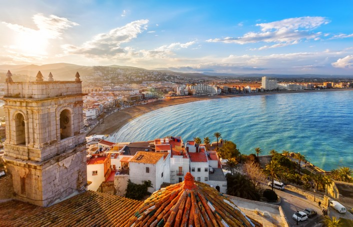
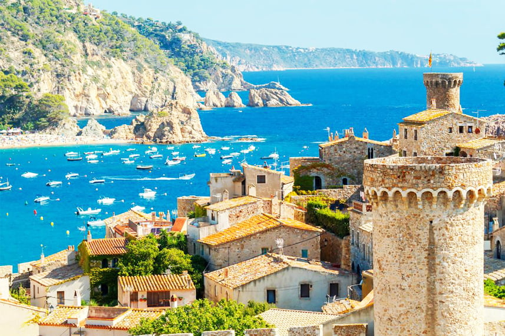

Всі історичні події, панування різних народів і країн вплинули на загальний вигляд Іспанії.

Кожен привніс свій штрих, створюючи яскравий колорит і багату культуру, яку цікаво досліджувати.

Знайти та підібрати тур онлайн до Іспанії варто, щоб розглянути дивовижну архітектуру різних стилів, насолодитися різноманітною природою — величними горами, мальовничими долинами, красивими островами, а також відпочити на прекрасних пляжах і зануритися в неймовірну культуру.